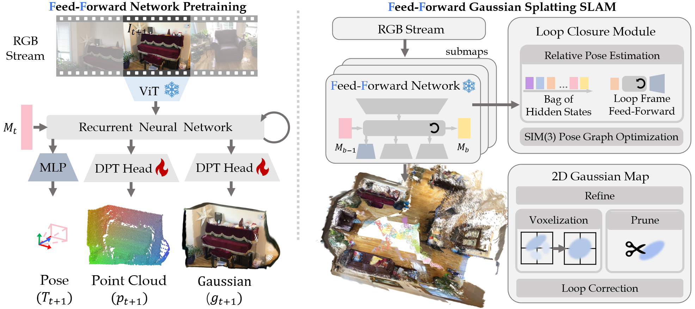
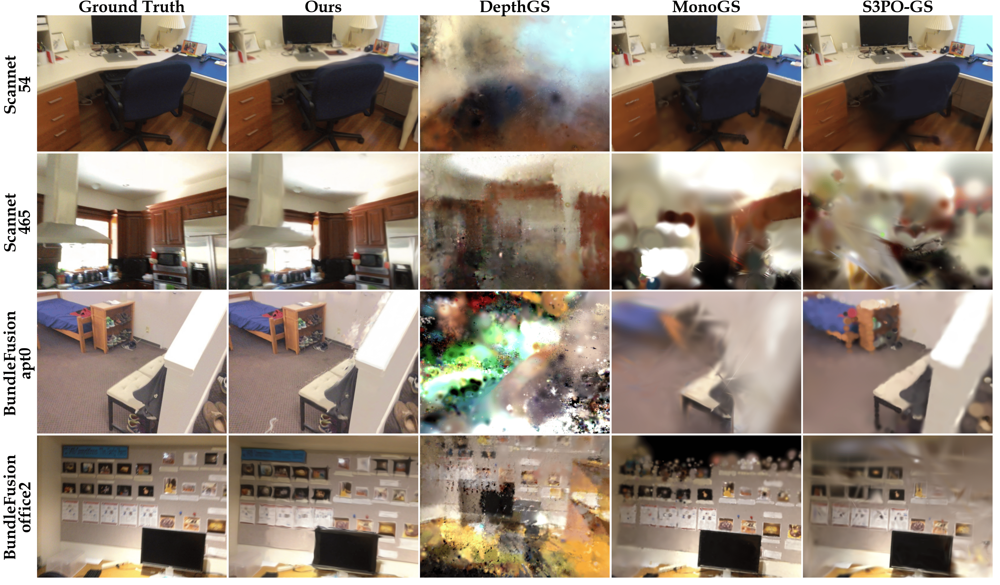
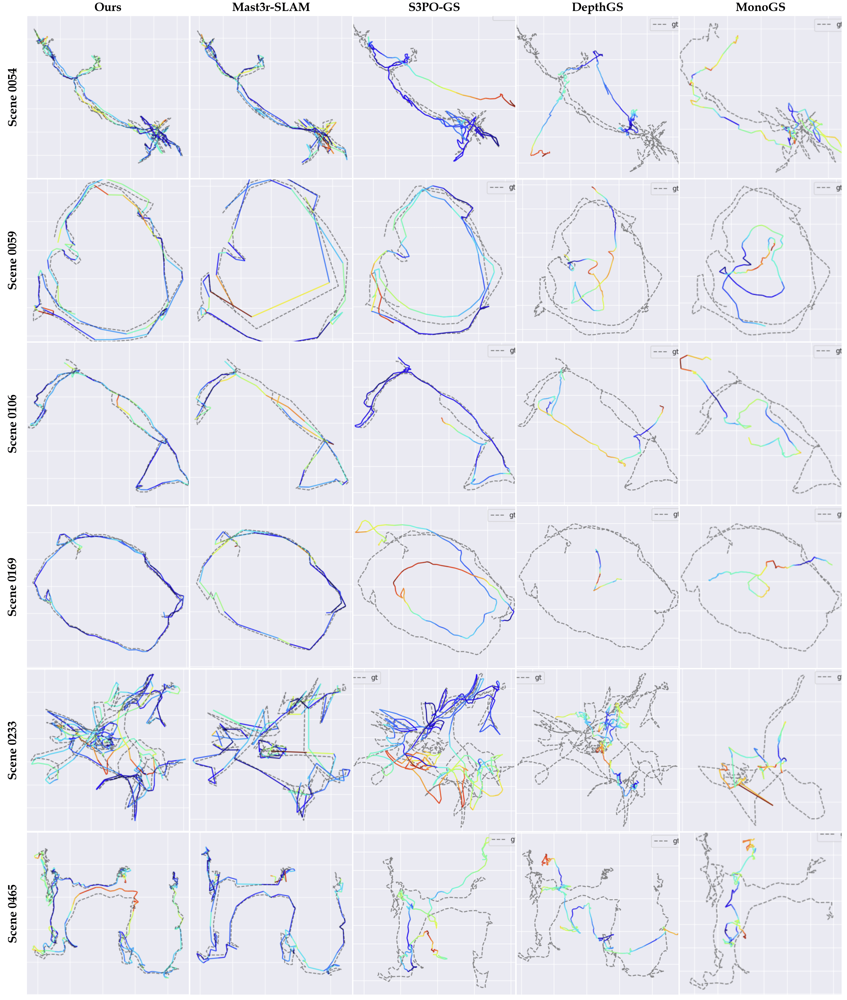
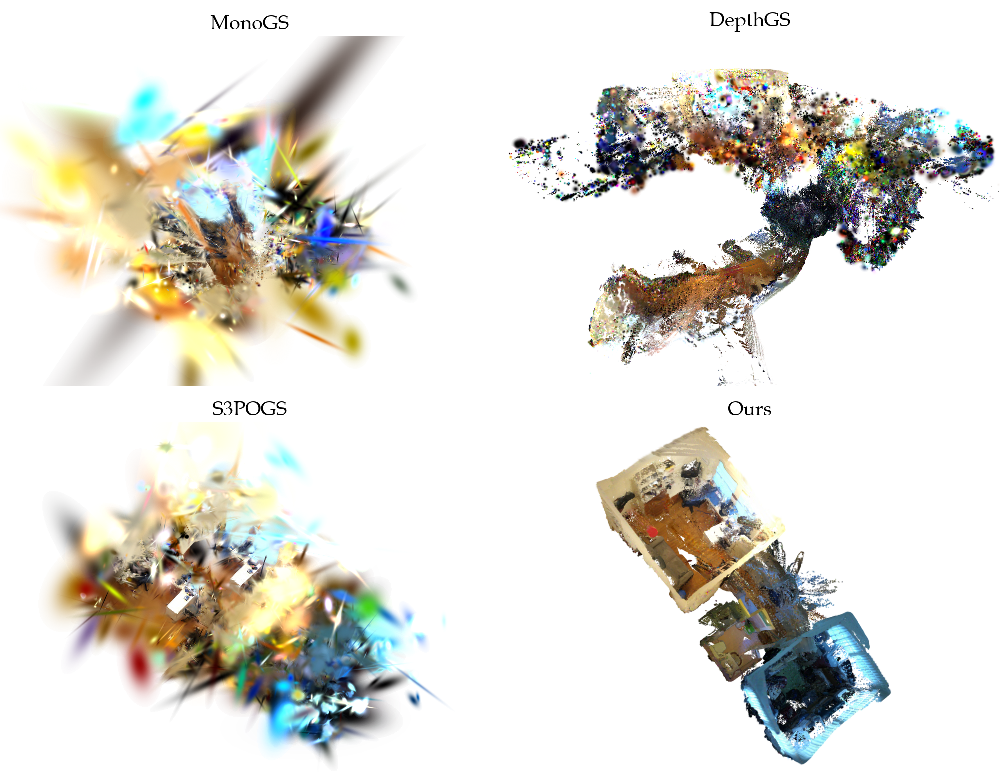

Flash-Mono: Feed-Forward Accelerated Gaussian Splatting Monocular SLAM
Abstract
Monocular 3D Gaussian Splatting SLAM suffers from critical limitations in time efficiency, geometric accuracy, and multi-view consistency. These issues stem from the time-consuming Train-from-Scratch optimization and the lack of inter-frame scale consistency from single-frame geometry priors. We contend that a feed-forward paradigm, leveraging multi-frame context to predict Gaussian attributes directly, is crucial for addressing these challenges. We present Flash-Mono, a system composed of three core modules: a feed-forward prediction frontend, a 2D Gaussian Splatting mapping backend, and an efficient hidden-state-based loop closure module. We trained a recurrent feed-forward frontend model that progressively aggregates multi-frame visual features into a hidden state via cross attention and jointly predicts camera poses and per-pixel Gaussian properties. By directly predicting Gaussian attributes, our method bypasses the burdensome per-frame optimization required in optimization-based GS-SLAM, achieving a 10x speedup while ensuring high-quality rendering. The power of our recurrent architecture extends beyond efficient prediction. The hidden states act as compact submap descriptors, facilitating efficient loop closure and global Sim(3) optimization to mitigate the long-standing challenge of drift. For enhanced geometric fidelity, we replace conventional 3D Gaussian ellipsoids with 2D Gaussian surfels. Extensive experiments demonstrate that Flash-Mono achieves state-of-the-art performance in both tracking and mapping quality, highlighting its potential for embodied perception and real-time reconstruction applications.
Method Overview

The Flash-Mono pipeline: a recurrent feed-forward frontend aggregates multi-frame visual features into a hidden state, jointly predicting camera poses and per-pixel Gaussian properties. The 2DGS mapping backend refines the map, while the hidden-state-based loop closure module enables efficient global Sim(3) optimization.
Rendering Quality

Qualitative comparison of rendering results. Flash-Mono produces sharper and more accurate novel view synthesis compared to existing monocular GS-SLAM methods.
Depth Estimation

Depth estimation comparison. By using 2D Gaussian surfels, Flash-Mono achieves more accurate and geometrically faithful depth reconstruction.
Trajectory Tracking

Trajectory comparison on challenging sequences. Flash-Mono achieves competitive or superior tracking accuracy with significantly faster processing speed.
Scene Reconstruction

Scene reconstruction comparison across multiple indoor environments, demonstrating Flash-Mono's ability to handle complex geometry and varying lighting.
BibTeX
@inproceedings{zhang2026flashmono,
title={Flash-Mono: Feed-Forward Accelerated Gaussian Splatting Monocular {SLAM}},
author={Zicheng Zhang and Ke Wu and Xiangting Meng and Keyu Liu and Jieru Zhao and Wenchao Ding},
booktitle={The Fourteenth International Conference on Learning Representations},
year={2026},
url={https://openreview.net/forum?id=nv3q3crc5D}
}